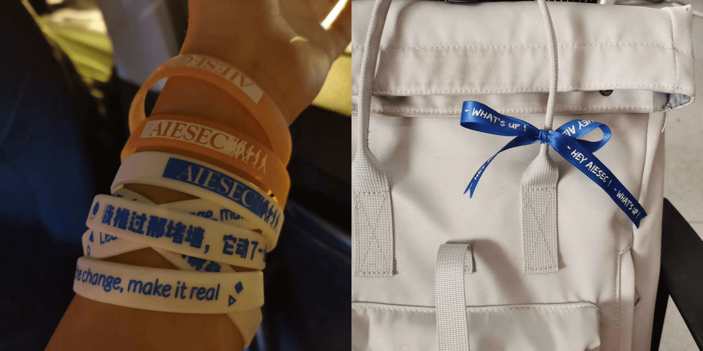

Yu Zhang
Yu (玉) means ‘precious treasure’ in Chinese — lucky you, you’ve just found one.
I’m a proactive and curious mind with an anthropologist’s eye for hidden stories, social dynamics, and the beauty of everyday life. Whether I’m leading a project, designing human-centered solutions, or diving into fieldwork, I bring creativity, empathy, and a strong sense of initiative. I love connecting ideas, people, and perspectives — and turning them into something meaningful.
üí¨ I am a ...
ü§ñ Project Manager in a Team of Robotic Engineers

At the heart of a robotics lab, I was the only woman ‚Äî and the one holding it all together. Over three years, I led a team of 30+ robotic engineers to design, develop, and compete in global robotics competitions organized by DJI. Our robots weren’t just machines ‚Äî they were battlefield heroes: some shot, some scouted with vision and infrared, others grabbed with precision arms. We engineered like gamers and executed like pros.
While my teammates focused on technical innovation, I made sure everything else happened:
- Ran recruitment, built team culture, and hosted 100+ meetings
- Built Excel-based Gantt charts to streamline progress and accountability
- Managed budgets, sponsorships, and saved thousands in resources
- Bridged engineers, partners, and professors with clarity and empathy
This wasn’t just project management ‚Äî it was full-spectrum leadership, shaped by grit, agility, and a whole lot of love for systems that work.
üçª Anthropologist in a Brewery
Wild yeast, bubbling tanks, and human relationships — that's my fieldwork.
As part of my Research Master in Social Sciences at the University of Amsterdam, I designed a solo research project investigating the multispecies collaboration between brewers and wild yeast in Yunnan, China. For months, I observed, listened, tasted, and documented the sensory and social worlds that emerge from fermentation. I stood with brewers as they sniffed and stirred, watching how micro-life and human care entwined in the creation of sour beer.
I call it “the happiest field site in the world.” This experience isn’t just about beer ‚Äî it’s about connection. About how food and drink bring people together.
üé¨ Documentary Director & Editor
I believe stories deserve to be told — especially the ones that live in everyday lives.
During my undergraduate fellowship, I co-directed One Night, a 30-minute ethnographic documentary on street food vendors in Suzhou. Over two months, I built trust with 30+ vendors, conducted intimate interviews, and shaped the visual narrative from scripting to final cut. The documentary explores how informal economies survive, thrive, and connect — all within a single bustling night.
It premiered at our university cinema, but its impact continues in the voices we amplified.
üèõÔ∏è Cultural Strategist for Heritage Projects
Culture isn’t static ‚Äî it evolves. During my internship at Suzhou Feiyu Media, I worked on a case consultation for the Suzhou Museum, researching over ten intangible cultural heritages to inform IP and product strategy.
Through onsite interviews, archival research, and creative ideation, I helped bridge tradition and design. I even collaborated with Ogilvy, proposing merchandise solutions that told meaningful stories and matched real market needs.
This is where anthropology meets brand strategy ‚Äî and I’m right at the intersection.
üåè Proud AIESECer
My AIESEC journey taught me how to lead, grow, and connect — fast.
As External Relationship Leader on the City Middle Management Board, I built a WeChat audience from 0 to over 1,000 in four months, published 15 original articles, and led over 10 campus events with 2,000+ attendees.
It wasn’t just marketing ‚Äî it was building a movement. And I’ll always be proud of that.
Lastly, Fun Facts…
ü߆ I used AI to generate logos and beer labels for the brewery I researched ‚Äî then printed them on glasses and barrels.
üåü My Dream Job Is‚Ķ Cook for all my loved ones‚Ķ, or win a lottery then become a artist (lottery first please).